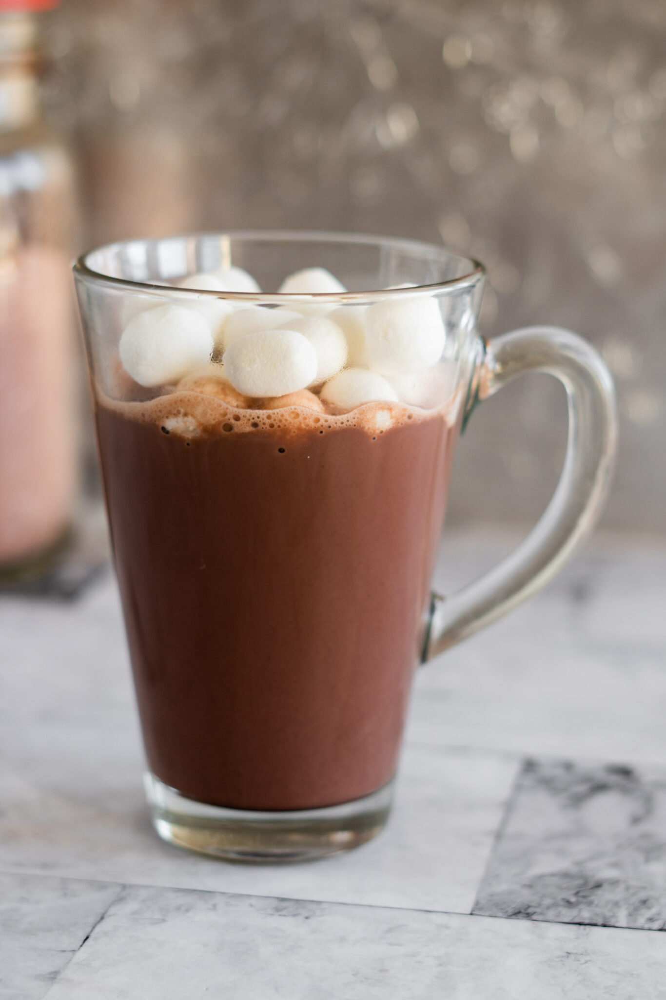

How to make Hot Chocolate

Description:
Hot Chocolate is a warm beverage, sometimes made with an instant powder.
This recipe uses more ingredients and takes longer in order to achieve a
more pleasant result. Marshmallows work as a good addition.
Ingredients
- 1cup milk
- 2tbsp unsweetened cocoa powder
- 2tbsp caster sugar
- 1/4tsp vanilla extract
- Pinch of salt
Steps
-
In a small saucepan, heat the milk over medium-low heat. Don't let it
boil; it should just be hot
-
Seperately, mix cocoa powder, sugar, and salt. Add a couple tablespoons
of heated milk and whisk until you have a smooth paste
-
Pour cocoa paste back into saucepan with the milk, continuously whisking
-
Keep heating the mixture over medium-low heat, constantly whisking until
well combined.
- Once ready, remove from heat and add vanilla extract
- Add hot cocolate to your favourite mug
- Enjoy